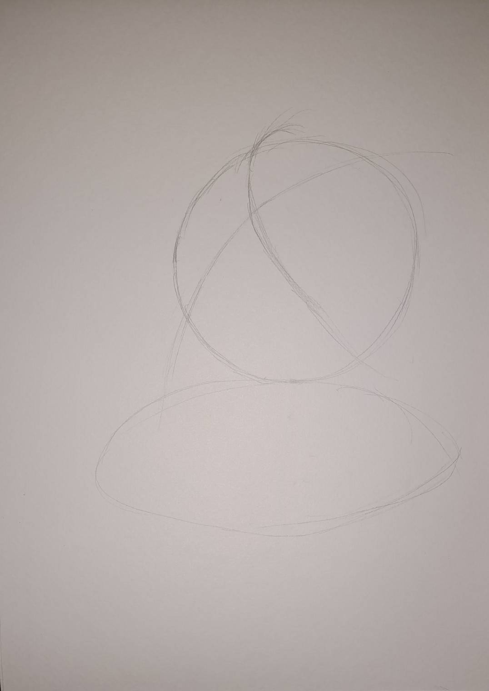
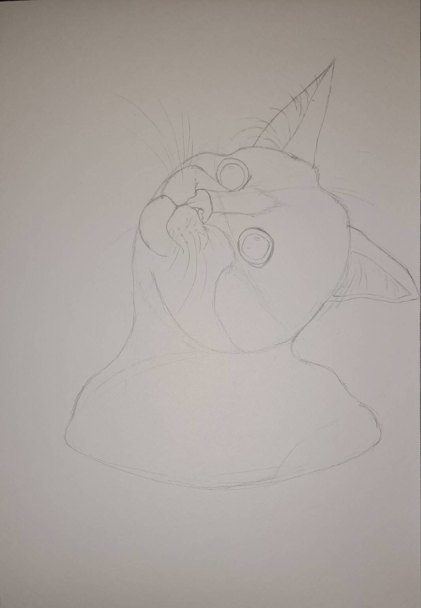
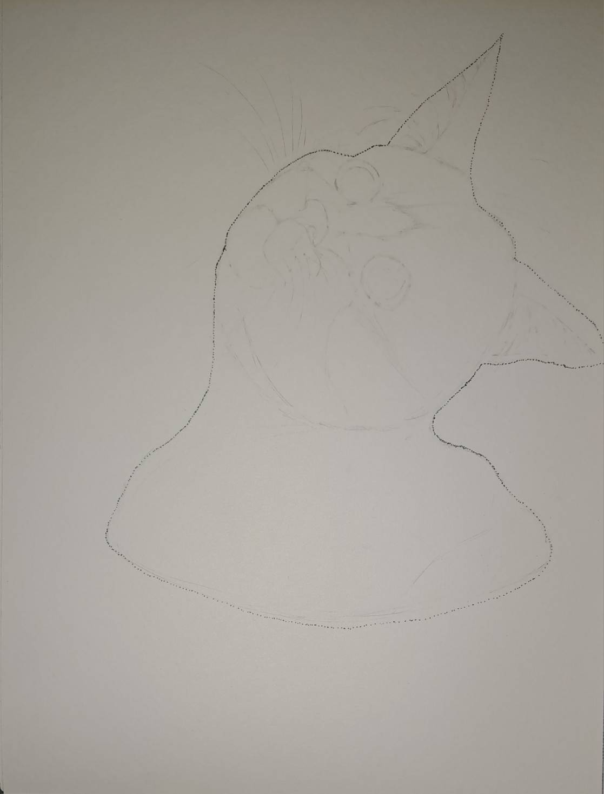
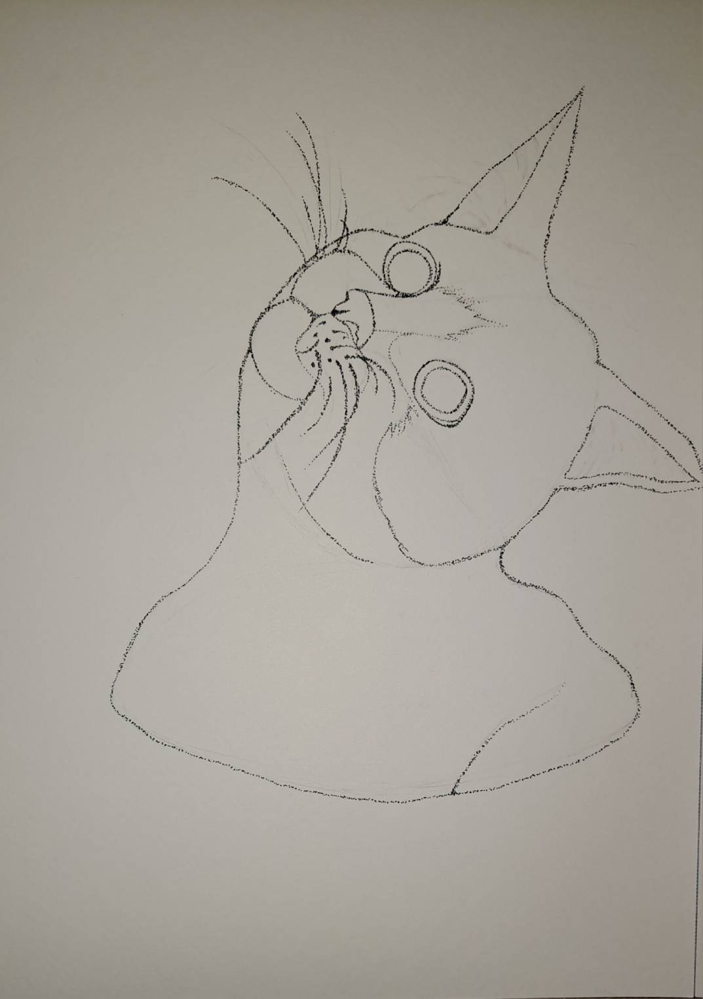
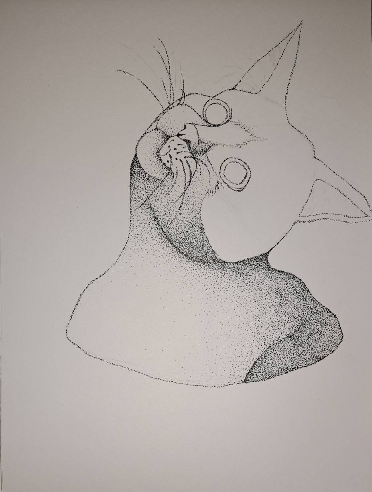

Kitty Cat
งานนี้หนูใช้เทคนิคจุดในการทำค่ะ
Genre : Drawing, Pointillism
Technic : Drawing, Pointillism (เทคนิคจุด)
Size : 2480px x 3508px (A4)
Result

Progress

1. เลือกต้นแบบและมุมที่ต้องการ
2. ร่างส่วนประกอบโครงร่าง

3. ร่างลักษณะของแมว

4. ลบภาพร่างให้จางลง
5. ใช้ปากกาตัดเส้นจุดเส้นนอกก่อน

6. จุดรายละเอียดให้เป็นเส้นปะด้านใน

7. จุดบริเวณขนสีขาวให้มีความถี่ต่างกัน ทำเป็นเงา ถ้าแถวนั้นมีจุดมากจะเป็นเงาที่เข้ม
8. จุดถี่ๆให้เป็นบริเวณที่เป็นสีดำของแมว
9. จากนั้นเริ่มจุดส่วนที่เป็นเงาให้เข้มขึ้นเพื่อให้แยกความแตกต่างของแสงให้ง่ายขึ้น
10. เว้นส่วนที่เป็นขยสีขาวหรือส่วนที่แสงสะท้อนไว้